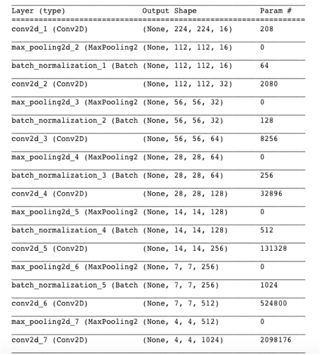
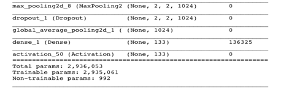
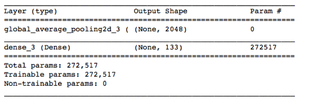

Capstone Project: DOg Breed
Classification CHalleNge
INTRODUCTION
It is a capstone project of Udacity
Data Science. The data sets is provided by Udacity. The goal
is to classify images of dogs according to their breed. Additionally, Dog Breed classification
is a challenging task due to high similarity between breeds as shown in figure
below. Usually, it is needed to
piece together a series of models to perform different tasks and different task
require different algorithms. The algorithm that detects humans in an image
will be different from the convolutional neural network (CNN) that infers dog
breed. There are many possible failure points and there does not exit any
perfect algorithm. There are several algorithms
to develop, first from scratch, after that a VGG16 net with bottleneck
features. Finally, a RestNet50 net is developed with bottleneck features and used
for dog breed classification app. The final algorithm infers the dog breed and
if a human face it infers similarity to a dog breed. It is said that humans
choose a dog they are similar to. If some other image is given as an input the
algorithm infers no dog breed in question. The architecture developed from scratch
is mostly to see how difficult it is to develop and trained from scratch and it
needs much more images than it is used here to be successful. Now, it is only trained with augmented image
set with originally only 6680 images. Therefore, pre-trained RestNet50 is much better
choice here for the app. Improvements
is discussed when the respective architecture is discussed. I did not see any
point to make a separate section for all the improvements of the architectures.
They all are different and it is not meant to use them in the app. The last
architecture only is used for the app.
There are following steps taken:
o
Datasets
o
Create a CNN to Classify Dog Breeds (from Scratch)
o
Use a CNN to Classify Dog Breeds (using Transfer Learning)
o
Create a CNN to Classify Dog Breeds (using Transfer
Learning)
Datasets
There
are a dog data set and a human data set. The dog data set contains:
There
are 133 total dog categories.
There are 8351 total dog images.
There
are 6680 training dog images.
There
are 835 validation dog images.
There
are 836 test dog images.
The human data set contains 13233 total human images.
Image data is already given with
the divided to validation, test and train sets. The figure below shows the distribution of the training data set of dog
images, X-axis has the classes from
1 to 133. Y-axis has the frequency of he classes. As it is seen some of the class categories to
not have many images which can cause a problem due to over-fitting towards the
classes that have more images in the training data set. The distribution is
somewhat rectangular. As we
can see maximum class has 77 images and minimum class has 26.
It is known that skewness affects in training if it is approximately 4:1. In that case accuracy would not be a good meaureinstead e.g. F1 score is better. The maximum skewness in tis data set is 77/26 which gives 3:1 . There are approximately 10 classes with this range of the totally 133 classes. The training data set is very small only 6680 images. The training data set is very small only 6680 images so augmentation is improving this somewhat. The image sets are augmented by rotations, by vertical and horizontal shifts and by flipping. Below is a picture of sample images from the original data set and augmented data set. Additionally, the histogram is shown for these images, color image has three channelsso it is plotted each channel in the same plot, blue, green and red. The figure shows that when images are for example rotatedthe histogram looks different, the position changes. The shapes in the background can make predictions more difficult if they are easily taken as a dog. Some images seem to have several dogs but the same breed luckily. If there would be different breed in the same picture, the model would not perform well. It would not know which breed to take. As it is breed classification is already difficult problem due to very similarfeatures between breeds. In the results one is able to see correctly classified cairn terrier but probability is only approximately 55 % that it is correctly classified. Additionally, white snowy background with white dog hair could give us a problem.
First preliminary step is to
detect human faces with OpenCV library by using Haar feature-based cascade classifiers. Additionally, lbp
feature-based cascade classifier is examined. It showed that Haar
features work better than lbp features. By using Haar features detection of human faces in 100%
of the cases. The dog faces are are
first detected by pre-trained RestNet50 net. Imagenet
is used by RestNet50 and ImageNet contains
over 10 million URLs, each linking to an image containing an object from one of
1000 categories. We make predictions and detect dog with this net. A dog detector is created.
Now, A CNN net is created to
detect dog breeds from scratch and accuracy has to be minimum greater than 1%. Here, data is
augmented to get better results. The developed model architecture summary
is shown below: It has 7
convolutional layers and pooling layers and one dropout to avoid over-fitting. Additionally there are Batch normalization layers. The test
accuracy of the model is approx. 36 %. Validation accuracy is approximately 32
%. Keras
gives approximate
time for each epoch to run and therefore, it is easy to approximate
the run time of the mode during the training. Compared to VGG 16 net which has
the model test accuracy approx. 47% is a good result and bearing in mind that
these pre-trained networks has been developed over a long period time and
trained by millions of images. It
could be improved easily. Augmented image sets are used for training. Batch
size is set to 20 and epochs is set to 50.
It appears to be several local minima but algorithm is able to over
these to next better optimum. Large deep nets with small data sets usually
over-fits. If there are not enough data a pre-trained deep net is a better
choice.
Description of the CNN net:
The
first convolutional layer detects features as lines and edges, it has 16
filters with kernel size 2. The second convolutional layer detects shapes. This
net takes output down to (2,2,1024). As a padding, "the same" is used
to get all the features. Pooling helps to make the representation approximately
invariant to small translations of the input due to it is not needed to
preserve the location of the dog in this application. MaxPooling
also reduces the size by 2 in width and height of the input duet o stride is
None and it defaults to pool_size parameter which is
2. Dropout is used to avoid over-fitting by factor of 40%. It works as follows:
it randomly sets a fraction rate of input units to 0 at each update during
training time. Global averaging takes the average of all weights and inputs
them to a fully connected layer. Batch normalization standardizes
the inputs to a layer for each mini-batch. This has the effect of stabilizing the learning process
and dramatically reducing the number of training epochs required to train deep
network and it provides some regularization and reduces generalization
error. 5 layers
of batch normalization is used.
THE 
THE
TRAINING, TEST AND VALIDATION:
Below is the best training
result.
VALIDATION RESULT: Validation Accuracy = 32 % TEST RESULT: Test accuracy: 36 % Augmented data is used and Keras cannot have .fit_generator with GridSearch, therefore it is not possible here to get the best
parameter combination but also Keras has only only different accuracy measures. As it is seen they give the same accuracy as result. This net is not for the app. It is only to show the difficulties with training from scratch.
To
reduce training time without sacrificing accuracy, transfer learning is used to
train CNN network. Transfer learning uses bottleneck features from VGG16 net
and it obtains equivalent accuracy just by one minute. The model architecture
is as follows:
The obtained mode accuracy is approx. 47% with 20 epochs and batch size 20. Test result was incorrectly predicted with accuracy of 55%.
This time transfer learning is used
to create CNN net with different model architecture as in previous
section. The accuracy should be at
least 60% on the test set.
There are several bottleneck features to choose
from. I tried most promising ones and found that ResNet50 bottlenecks give good
accuracy for prediction. The accuracy is much better than from different VGG
nets. For the comparisons sake batch
size is set 20 and epochs is set to 20..

This architecture gives
approximately 82% accuracy on the test set with epoch size in training set to
20 and batch size
to 20. Prediction test shows: The validation accuracy: 81 %.
The model used here is the pre-trained Resnet50 with bottleneck features from
previous section. This app consists of preprocessing of the images and dog
detector, face detector and a vowel detector to create a proper sentences and a dog breed
classifier. Resnet50 with transfer learning is used as a model with bottleneck
features due t best obtained accuracy on test set.
It takes an image as input and
detects weather it is dog, human or something else. It outputs a picture and a
sentence saying which it has detected and if it is a dog also the predicted dog
breed.
Below is shown a couple of
prediction results: For example plotted prediction show that terrier breeds are
quite difficult topredict as results is 57% for cairn terrier. The prediction here is correct and the
low probability says that alll the
other class probalities have to sum to 43% due to probability has to sum to one
for all classes. Thereby, 57% in result implicates the difficulty in prediction.
The other breeds shown below have prediction probability almost 100%.
Pre-trained ResNet50 has only one layer global average pooling. Improvement
maybe to added batch normalisation or
some regularisation or dropout.

Reflection:
Several option for the capstone projects were
given but it was not clear how much resources they require e.g. some of the
projects had data sets with 2.45+ GB.
For me it was not possible to take that due to my small computer. It was
hard to choose due to all the projects were interesting and valuable. Finally, I
chose dog breed classification.
This
project contains several different architectures and it feels like some of them
are only for your information kind of purpose and also to get
the feeling and some intuition. GPU resources given was not much only 15 hours or so. Actually, I used all of them during the
project. I would have liked to have
possibility to get some research articles of the similar models and try to match
them or even improve. That on the other
hand requires more time and resources is was not an option here. The project
had only approximately 3 weeks time to finish it. It was not possible to research many
possibilities how to train, validate and test I could improve the ResNet50
performance by Gridsearch if that is possible to use
there. I also would like to try
later on how that The Data Science was done in PyTorch
as far as deep learning was considered but suddenly here it was Keras. I would have preferred to concentrate more of the
final app architecture. Most of the time went to the model training from
scratch. It was very interesting to see the performance and all the knowledge
you gain by developing it. I got from one reviewer would do compared
the models I have developed during the project. . The project
was valuable.
References: images are obtained from Kodak pictures,
Wikipedia and Unsplash, Photos for everyone
https://machinelearningmastery.com/batch-normalization-for-training-of-deep-neural-networks/
http://www.deeplearningbook.org